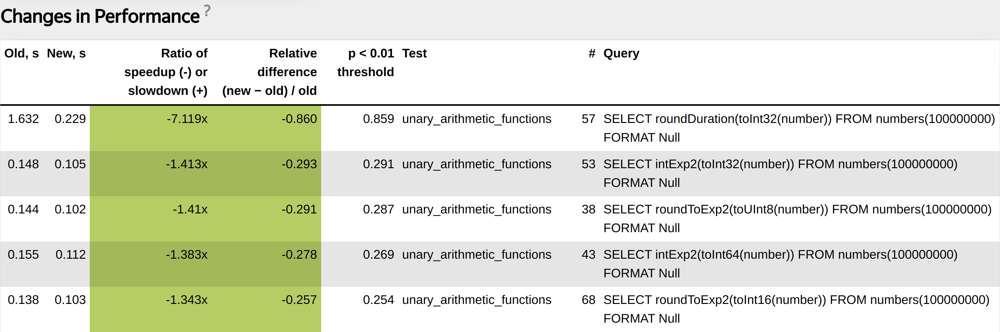

Performance Tests

Maksim, developer of ClickHouse.
1. High Level System Architecture.
2. CI/CD Pipeline.
3. Introspection.
4. Abstractions and Algorithms.
5. Libraries.
6. Low level techniques.
Column-oriented storage — data is physically stored by columns.
Only necessary columns are read from disk during query.
Better compression because of data locality.
Vectorized query execution — data is processed in blocks. Block contains multiple columns with max_block_size rows (65505 by default).
Each column is stored as a vector of primitive data types or their combination:
1. Better utilization for CPU caches and pipeline.
2. Data is processed using SIMD instructions.
Numeric columns — PODArray. Almost the same as std::vector.
1. Use our Allocator with support of realloc.
2. No additional memset during resize.
3. Padding with 15 bytes at the end.
Nullable columns contain data column and UInt8 column bitmask is element null.
Array columns contain data column and UInt64 column with offsets.
Const column contain 1 constant value.
Main class is IColumn.
Polymorphic type that can be part of interfaces.
Declares methods that all concrete column types need to support.
In most of the functions unwrapped to concrete column type.
class IColumn
{
...
[[nodiscard]] virtual Ptr filter(const Filter & filt, ssize_t result_size_hint) const = 0;
[[nodiscard]] virtual Ptr permute(const Permutation & perm, size_t limit) const = 0;
virtual void insertFrom(const IColumn & src, size_t n);
virtual void insertRangeFrom(const IColumn & src, size_t start, size_t length) = 0;
...
}
1. Parse query into AST.
2. Make AST optimizations (Most of them need to be moved into logical, physical query plans or expression DAG optimizations).
3. Build logical query plan + make logical query plan optimizations.
4. Build physical query plan + make physical query plan optimizations.
5. Execution of physical query plan.
1. Functional, Integration tests.
2. Run all tests with sanitizers (ASAN, TSAN, MSAN, UBSAN).
3. Fuzzers (data types, compression codecs).
4. AST fuzzer.
5. Stress tests (Our special TSAN stress test, special tests with random settings).
6. Performance tests.
Part of CI/CD pipeline.
Runs for each commit in pull request.
Runs for each commit in the master branch.
Write test in special XML configuration.
<test>
<substitutions>
<substitution>
<name>func</name>
<values>
bitCount
bitNot
abs
...
</values>
</substitution>
<substitution>
<name>expr</name>
<values>
<value>number</value>
<value>toUInt32(number)</value>
...
</values>
</substitution>
</substitutions>
<query>SELECT {func}({expr}) FROM numbers(100000000) FORMAT Null</query>
</test>
Collect different statistics during each performance test run. Can be useful for later debugging.
Processor metrics (CPU cycles, cache misses same as perf-stat).
ClickHouse specific profile events (read bytes from disk, transferred over network, etc).

Helps us find performance regressions.
Nice tool that can help to find places where performance can be improved.
1. Try different allocators.
2. Try different libraries.
3. Try different compiler options (loop unrolling, inline threshold).
4. Try different compilers (clang, gcc), different compiler versions.
5. Enable AVX/AVX2/AVX512 for build.
Query should not be short, because otherwise it measures nothing.
Query should not be very long. Performance of long queries can be more affected by random external factors.
It is also important to write a query for test in a special way to check some function, or feature in isolation.
Performance tests must be represent with synthetic data (for benchmarks), and with real data.
For real data we use obfuscated hits, visits datasets from Yandex Metrica.
1. Run two server versions simultaneously on the same machine before commit and after commit.
2. Run performance tests against two servers.
3. Measure medians for performance tests runs. Also collect all other possible statistics like CPUBranchMisses, CPUCacheMisses.
4. Use statistical methods to compute the largest difference in median query run T that we can observe even if nothing has changed.
5. Using D difference of medians and T decide if changes in performance are significant.
https://clickhouse.com/blog/testing-the-performance-of-click-house/If T is greater than 10 percent, the query is unstable.
For such a query we cannot detect any changes in performance because even if nothing has changed query time can be affected.
Should we just delete tests with unstable queries?
Several examples why query can be unstable:
1. Excessive allocations.
2. Large copying.
3. Bad written query.
4. External factors (disks, network, background activities, bugs in kernel).
We should only delete/rewrite tests with bad written queries. Other cases require deep investigation.
<test>
<query>
SELECT detectLanguageUnknown(SearchPhrase)
FROM hits_100m_single
LIMIT 500000
FORMAT Null
</query>
<query>
SELECT detectCharset(SearchPhrase)
FROM hits_100m_single
LIMIT 500000
FORMAT Null
</query>
</test>
Functions detectCharset, detectLanguageUnknown inner loop:
for (size_t i = 0; i < offsets.size(); ++i)
{
const UInt8 * str = data.data() + offsets[i - 1];
const size_t str_len = offsets[i] - offsets[i - 1] - 1;
HashMap<UInt16, UInt64, DefaultHash<UInt16>, 4> model;
/// Calculate string ngrams
calculateStats(str, str_len, model);
/// Compare ngrams with known encodings dictionaries and get result value
std::string_view result_value = matchEncoding(model, encodings_frequency);
/// Write result value into column
writeResult(result_column, result_value);
}
Functions detectCharset, detectLanguageUnknown inner loop:
for (size_t i = 0; i < offsets.size(); ++i)
{
const UInt8 * str = data.data() + offsets[i - 1];
const size_t str_len = offsets[i] - offsets[i - 1] - 1;
HashMapWithStackMemory<UInt16, UInt64, DefaultHash<UInt16>, 4> model;
/// Calculate string ngrams
calculateStats(str, str_len, model);
/// Compare ngrams with known encodings dictionaries and get result value
std::string_view result_value = matchEncoding(model, encodings_frequency);
/// Write result value into column
writeResult(result_column, result_value);
}
Collect ProfileEvents for each query:
RealTimeMicroseconds, UserTimeMicroseconds, SystemTimeMicroseconds, SoftPageFaults, HardPageFaults using getrusage system call.
Collect :taskstats from procFS (Also support Netlink interface).
OSCPUVirtualTimeMicroseconds, OSCPUWaitMicroseconds (when /proc/thread-self/schedstat is available). OSIOWaitMicroseconds (when /proc/thread-self/stat is available). OSReadChars, OSWriteChars, OSReadBytes, OSWriteBytes (when /proc/thread-self/io is available)
Collect ProfileEvents for each query:
Hardware specific counters CPU cache misses, CPU branch mispredictions using perf_event_open system call.
https://man7.org/linux/man-pages/man2/perf_event_open.2.htmlCollect ProfileEvents for each query:
Different ClickHouse specific metrics (FileOpen, DiskReadElapsedMicroseconds, NetworkSendBytes, Zookeeper statistics, jemalloc statistics).
Can be exported in Graphite, Prometheus.
SELECT PE.Names AS ProfileEventName, PE.Values AS ProfileEventValue
FROM system.query_log ARRAY JOIN ProfileEvents AS PE
WHERE query_id='344b07d9-9d7a-48f0-a17e-6f5f6f3d61f5'
AND ProfileEventName LIKE 'Perf%';
┌─ProfileEventName─────────────┬─ProfileEventValue─┐
│ PerfCpuCycles │ 40496995274 │
│ PerfInstructions │ 57259199973 │
│ PerfCacheReferences │ 2072274618 │
│ PerfCacheMisses │ 146570206 │
│ PerfBranchInstructions │ 8675194991 │
│ PerfBranchMisses │ 259531879 │
│ PerfStalledCyclesFrontend │ 813419527 │
│ PerfStalledCyclesBackend │ 15797162832 │
│ PerfCpuClock │ 10587371854 │
│ PerfTaskClock │ 10587382785 │
│ PerfContextSwitches │ 3009 │
│ PerfCpuMigrations │ 113 │
│ PerfMinEnabledTime │ 10584952104 │
│ PerfMinEnabledRunningTime │ 4348089512 │
│ PerfDataTLBReferences │ 465992961 │
│ PerfDataTLBMisses │ 5149603 │
│ PerfInstructionTLBReferences │ 1344998 │
│ PerfInstructionTLBMisses │ 181635 │
└──────────────────────────────┴───────────────────┘
Periodically collect stack traces from all currently running threads.
Send signal and collect traces in the signal handler, then put them in a special system table allowing for introspection.
Binary must be compiled with -fasynchronous-unwind-tables.
1. There can be many edge cases during stack unwinding when .eh_frame section can contain broken unwind instructions (bug in compiler, bug in hand written assembly). LLVM libunwind will crash.
2. Unwind library should be signal safe, no allocations during traces collection.
Currently using a patched fork of LLVM libunwind.
Check all threads current stack trace from system.stack_trace
WITH arrayMap(x -> demangle(addressToSymbol(x)), trace) AS all
SELECT thread_name, thread_id, query_id, arrayStringConcat(all, '\n') AS res
FROM system.stack_trace LIMIT 1 FORMAT Vertical;
Row 1:
──────
thread_name: clickhouse-serv
thread_id: 125441
query_id:
res: pthread_cond_wait
std::__1::condition_variable::wait(std::__1::unique_lock&)
BaseDaemon::waitForTerminationRequest()
DB::Server::main(/*arguments*/)
Poco::Util::Application::run()
DB::Server::run()
Poco::Util::ServerApplication::run(int, char**)
mainEntryClickHouseServer(int, char**)
main
__libc_start_main
_start
Generate flamegraph of query execution
./clickhouse-client --query="SELECT
arrayStringConcat(
arrayMap(x -> concat(
splitByChar('/', addressToLine(x))[-1],
'#',
demangle(addressToSymbol(x))),
trace),
';') AS stack,
count(*) AS samples
FROM system.trace_log
WHERE (trace_type = 'Real') AND (query_id = '344b07d9-9d7a-48f0-a17e-6f5f6f3d61f5')
GROUP BY trace" | flamegraph.pl
During distributed query it is hard to introspect each server that participated in query execution.
SELECT * FROM cluster('cluster', system.tracelog);
SELECT * FROM cluster('cluster', system.query_log);
For high performance systems interfaces must be determined by algorithms.
Top-down approach does not work.
High-performance system must be designed concentrating on doing a single task efficiently.
Designed from hardware capabilities.
ClickHouse was designed to efficiently FILTER and GROUP BY data that fits in RAM.
There is no silver bullet, or best algorithm for any task.
Try to choose the fastest possible algorithm/algorithms for your specific task.
Performance must be evaluated on real data.
Most of the algorithms are affected by data distribution.
Complex task can be viewed as number of small tasks.
Such small tasks can also be viewed as special cases that can be optimized.
For any task there are dozens of different algorithms that can be combined together (Example Sorting, Aggregation).
Each algorithm can be tuned later using different low-level optimizations (Data layout, Specializations, SIMD instructions, JIT compilation).
High level design decision — data must be processed not only by multiple threads, but by multiple servers. Scalable both vertically and horizontally.
Core component is the HashTable framework.
Different HashTable for different types of keys (Special StringHashTable for Strings).
Additional specializations for Nullable, LowCardinality
Tuned a lot of low-level details, like allocations, structures layout in memory, batch multiple operations to avoid virtual function calls.
Added JIT compilation for special cases.
Added cache of hash-table sizes.
Optimizing performance is about trying different approaches.
Most of the time without any results.
Each problem can have a lot degrees of freedom. For example Sorting:
Stable / nonstable?
External / in RAM?
With limit/without limit?
Is the data already almost sorted?
What about data distribution? How many unique values?
Can we use vectorized sorting algorithms?
Can we allocate additional memory?
Good design almost always consists of high level interface around high performance low level data structure or algorithm.
Aggregation (HashTable framework).
RangeHashedDictionary (Implicit static IntervalTree in memory).
Sorting, insert into MergeTree (Sorting framework with a lot of specializations).
Performance results for production data.
INSERT INTO test_hits_insert
SELECT UserID, WatchID, CounterID
FROM hits_100m_single
Was: 22.043 sec (4.54 million rows/s., 90.73 MB/s.)
Now: 11.268 sec (8.87 million rows/s., 177.50 MB/s.)
Improvement of ORDER BY, insert and merge in MergeTree,
and window functions.
SELECT WatchID FROM hits_100m_obfuscated ORDER BY Age
Was: 4.154 sec. (24.07 million rows/s., 216.64 MB/s.)
Now: 0.482 sec. (207.47 million rows/s., 1.87 GB/s.)
If someone on the Internet says my algorithm is fastest we will try it in ClickHouse.
Always try to find interesting algorithms, and solutions.
ClickHouse/contrib$ ls | grep -v "cmake" | wc -l
97
1. Different algorithms for parsing floats, json (multiple libraries).
2. A lot of integrations.
3. Embedded storages.
4. LLVM for JIT compilation.
5. libcxx (C++ standard library).
Almost in any library our CI system finds bugs. We report them to maintainers.
We also have a lot of library forks with a lot of changes. For example POCO, LLVM libunwind.
We are not afraid of adding additional contrib. Our CI system will do the job.
JIT compilation can transform dynamic configuration into static configuration.
Not all functions can be easily compiled, not all algorithms can be easily compiled.
Has its own costs (compilation time, memory, maintenance).
But can greatly improve performance in special cases.
Compile evaluation of multiple expressions. Example: SELECT a + b * c + 5 FROM test_table;
Compile special cases for GROUP BY. Example: SELECT sum(a), avg(b), count(c) FROM test_table;
Compile comparator in ORDER BY. Example: SELECT * FROM test_table ORDER BY a, b, c;
In all cases we transform dynamic configuration into static.
My presentation from CPP Russia 2021 JIT in ClickHouse:
Compile evaluation of multiple expressions. Example: SELECT a + b * c + 5 FROM test_table;
void aPlusBMulitplyCPlusConstant(
int64_t * a,
int64_t * b,
int64_t * c,
int64_t constant,
int64_t * result,
size_t size)
{
for (size_t i = 0; i < size; ++i)
{
*result = (*a) + (*b) * (*c) + constant;
++a;
++b;
++c;
++result;
}
}
.LBB0_8: # %vector.body
vmovdqu (%r11,%rax,8), %ymm1
vmovdqu (%r9,%rax,8), %ymm3
vmovdqu 32(%r11,%rax,8), %ymm2
vmovdqu 32(%r9,%rax,8), %ymm4
vpsrlq $32, %ymm3, %ymm5
vpsrlq $32, %ymm1, %ymm6
vpmuludq %ymm1, %ymm5, %ymm5
vpmuludq %ymm6, %ymm3, %ymm6
vpmuludq %ymm1, %ymm3, %ymm1
vpsrlq $32, %ymm4, %ymm3
vpmuludq %ymm2, %ymm3, %ymm3
vpaddq %ymm5, %ymm6, %ymm5
vpsllq $32, %ymm5, %ymm5
vpaddq %ymm5, %ymm1, %ymm1
vpsrlq $32, %ymm2, %ymm5
vpmuludq %ymm2, %ymm4, %ymm2
vpaddq (%r14,%rax,8), %ymm1, %ymm1
vpmuludq %ymm5, %ymm4, %ymm5
vpaddq %ymm3, %ymm5, %ymm3
vpsllq $32, %ymm3, %ymm3
vpaddq %ymm3, %ymm2, %ymm2
vpaddq 32(%r14,%rax,8), %ymm2, %ymm2
vpaddq %ymm0, %ymm1, %ymm1 /// in ymm0 there is constant 5. vpbroadcastq (%rbp), %ymm0
vmovdqu %ymm1, (%r10,%rax,8)
vpaddq %ymm0, %ymm2, %ymm2
vmovdqu %ymm2, 32(%r10,%rax,8)
addq $8, %rax
cmpq %rax, %r8
ClickHouse distributed as portable binary.
We use the old instruction set SSE4.2.
For AVX, AVX2, AVX512 instructions need to use runtime instructions specialization using CPUID.
In addition a lot of companies bring us SIMD optimizations (ContentSquare, Intel), before most such optimizations were disabled during compilation time.
It is important that compilers can vectorize even complex loops. We can rely on this.
Main idea apply compiler flags to some functions, to compile it with AVX, AVX2, AVX512
Then in runtime check CPUID and execute specialized function.
For example for clang:
# define BEGIN_AVX512F_SPECIFIC_CODE \
_Pragma("clang attribute push(__attribute__((target(\"sse,sse2,sse3,ssse3,sse4,\
popcnt,avx,avx2, avx512f\"))), apply_to=function)")
\
# define BEGIN_AVX2_SPECIFIC_CODE \
_Pragma("clang attribute push(__attribute__((target(\"sse,sse2,sse3,ssse3,sse4,\
popcnt, avx,avx2\"))), apply_to=function)") \
\
# define END_TARGET_SPECIFIC_CODE \
_Pragma("clang attribute pop")
Usage for standalone functions:
DECLARE_DEFAULT_CODE (
int funcImpl() {
return 1;
}
) // DECLARE_DEFAULT_CODE
DECLARE_AVX2_SPECIFIC_CODE (
int funcImpl() {
return 2;
}
) // DECLARE AVX2_SPECIFIC_CODE
/// Dispatcher function
int dispatchFunc() {
#if USE_MULTITARGET_CODE
if (isArchSupported(TargetArch::AVX2))
return TargetSpecific::AVX2::funcImpl();
#endif
return TargetSpecific::Default::funcImpl();
}
Standalone functions are not interesting.
#define AVX512_FUNCTION_SPECIFIC_ATTRIBUTE __attribute__((target("sse,sse2,sse3,\
ssse3,sse4,popcnt, avx,avx2,avx512f"))) \
\
#define AVX2_FUNCTION_SPECIFIC_ATTRIBUTE __attribute__((target("sse,sse2,sse3,ssse3,\
sse4,popcnt, avx,avx2"))) \
Insert specific attribute before function name.
We also need to generate functions with different names. Ideally with suffixes like SSE42, AVX2, AVX512.
int /*Insert specific attribute here*/ testFunctionImpl(int value)
{
return value;
}
int AVX2_FUNCTION_SPECIFIC_ATTRIBUTE testFunctionImplAVX2(int value)
{
return value;
}
Split function into header (MULTITARGET_FUNCTION_HEADER), name and body (MULTITARGET_FUNCTION_BODY) to insert specific attribute before name.
MULTITARGET_FUNCTION_AVX2_SSE42(
MULTITARGET_FUNCTION_HEADER(int),
/*We need to insert specific attribute here*/ testFunctionImpl,
MULTITARGET_FUNCTION_BODY((int value)
{
return value;
}))
Our infrastructure is ready.
Now how to find places where SIMD optimizations can be applied?
Make build in our performance tests for AVX, AVX2, AVX512.
If some performance tests will run much faster, we find place for dynamic dispatch.
Wrap such place into our macros.
Find a place using our performance tests.
template <typename Value>
void NO_INLINE addManyImpl(const Value * __restrict ptr, size_t start, size_t end)
{
ptr += start;
size_t count = end - start;
const auto * end_ptr = ptr + count;
/// Loop
T local_sum{};
while (ptr < end_ptr)
{
Impl::add(local_sum, *ptr);
++ptr;
}
Impl::add(sum, local_sum);
}
Wrap function in our dynamic dispatch macro.
MULTITARGET_FUNCTION_AVX2_SSE42(
MULTITARGET_FUNCTION_HEADER(
template <typename Value>
void NO_SANITIZE_UNDEFINED NO_INLINE
), addManyImpl,
MULTITARGET_FUNCTION_BODY((const Value * __restrict ptr, size_t start, size_t end)
{
ptr += start;
size_t count = end - start;
const auto * end_ptr = ptr + count;
/// Loop
T local_sum{};
while (ptr < end_ptr)
{
Impl::add(local_sum, *ptr);
++ptr;
}
Impl::add(sum, local_sum);
}))
Dispatch function based on CPUID:
template <typename Value>
void NO_INLINE addMany(const Value * __restrict ptr, size_t start, size_t end)
{
#if USE_MULTITARGET_CODE
if (isArchSupported(TargetArch::AVX2))
{
addManyImplAVX2(ptr, start, end);
return;
}
else if (isArchSupported(TargetArch::SSE42))
{
addManyImplSSE42(ptr, start, end);
return;
}
#endif
addManyImpl(ptr, start, end);
}
Loop in unary functions.
static void vector(const ArrayA & a, ArrayC & c)
{
/// Loop Op::apply is template for operation
size_t size = a.size();
for (size_t i = 0; i < size; ++i)
c[i] = Op::apply(a[i]);
}
Loop in unary functions.
MULTITARGET_FUNCTION_WRAPPER_AVX2_SSE42(
MULTITARGET_FH(static void NO_INLINE),
vectorImpl,
MULTITARGET_FB((const ArrayA & a, ArrayC & c) /// NOLINT
{
/// Loop Op::apply is template for operation
size_t size = a.size();
for (size_t i = 0; i < size; ++i)
c[i] = Op::apply(a[i]);
}))
roundDuration optimized even better than others using special AVX2 instructions.
For AVX2 we use such optimizations a lot.
For AVX512 currently we do not apply a lot of such optimizations. It potentially could decrease performance of other system parts.
Latest Intel processors like Rocket Lake and Ice Lake fix this issue. We can detect such processors in runtime and then use optimizations.
https://stackoverflow.com/questions/56852812/simd-instructions-lowering-cpu-frequency
We have AVX, AVX2, AVX512 pull requests that periodically build ClickHouse to check if there are some places to improve.
https://github.com/ClickHouse/ClickHouse/pull/34071
1. CI/CD infrastructure, especially performance tests, must be the core component of a high performance system.
2. Without deep introspection it is hard to investigate issues with performance.
3. For high performance systems interfaces must be determined by algorithms.
4. Add specializations for special cases.
5. Tune your performance using low-level techniques (Data layout, JIT compilation, Dynamic Dispatch).